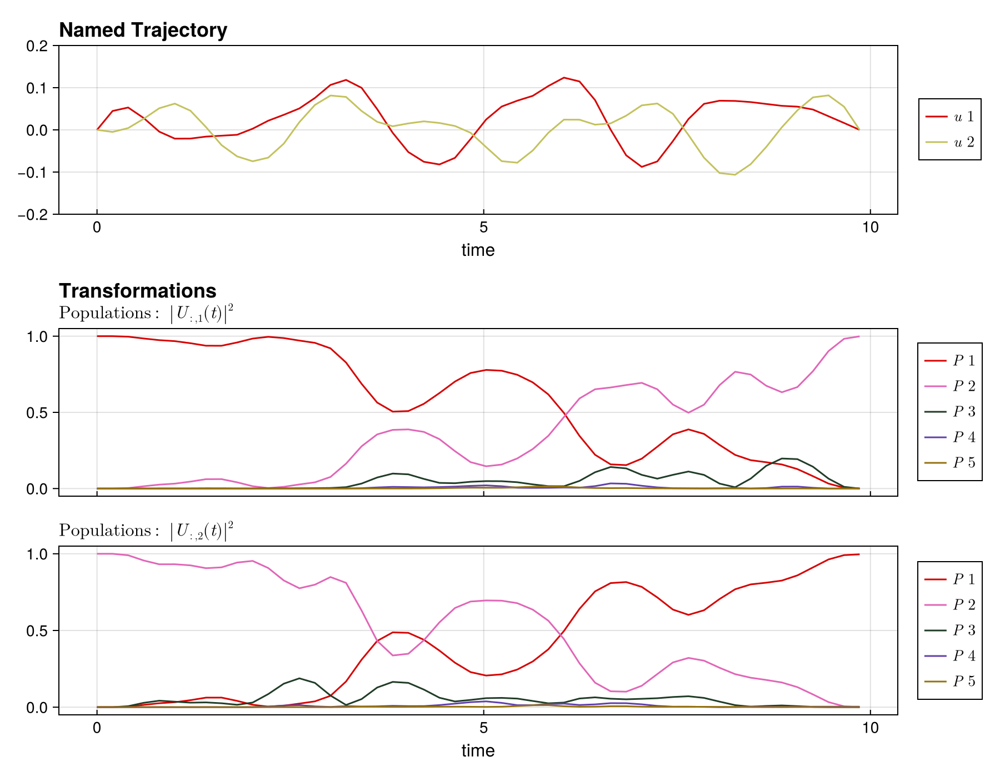
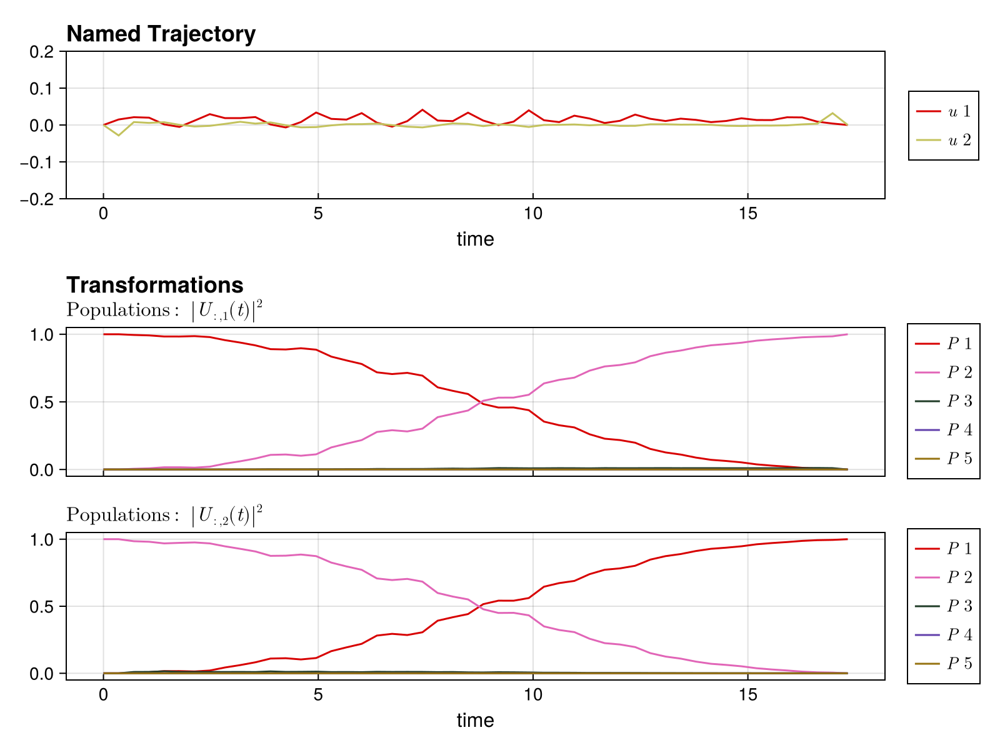

Multilevel Transmon
In this example we will look at a multilevel transmon qubit with a Hamiltonian given by
\[\hat{H}(t) = -\frac{\delta}{2} \hat{n}(\hat{n} - 1) + u_1(t) (\hat{a} + \hat{a}^\dagger) + u_2(t) i (\hat{a} - \hat{a}^\dagger)\]
where $\hat{n} = \hat{a}^\dagger \hat{a}$ is the number operator, $\hat{a}$ is the annihilation operator, $\delta$ is the anharmonicity, and $u_1(t)$ and $u_2(t)$ are control fields.
We will use the following parameter values:
\[\begin{aligned} \delta &= 0.2 \text{ GHz}\\ \abs{u_i(t)} &\leq 0.2 \text{ GHz}\\ T_0 &= 10 \text{ ns}\\ \end{aligned}\]
For convenience, we have defined the TransmonSystem function in the QuantumSystemTemplates module, which returns a QuantumSystem object for a transmon qubit. We will use this function to define the system.
Setting up the problem
To begin, let's load the necessary packages, define the system parameters, and create a a QuantumSystem object using the TransmonSystem function.
using Piccolo
using SparseArrays
using Random;
Random.seed!(123);
using CairoMakie
# define the time parameters
T₀ = 10 # total time in ns
N = 50 # number of time steps
Δt = T₀ / N # time step
# define the system parameters
levels = 5
δ = 0.2
# add a bound to the controls
u_bound = [0.2, 0.2]
ddu_bound = 1.0
# create the system
sys = TransmonSystem(drive_bounds = u_bound, levels = levels, δ = δ)
# let's look at the drives of the system
get_drives(sys)[1] |> sparse5×5 SparseArrays.SparseMatrixCSC{ComplexF64, Int64} with 8 stored entries:
⋅ 6.28319+0.0im ⋅ ⋅ ⋅
6.28319+0.0im ⋅ 8.88577+0.0im ⋅ ⋅
⋅ 8.88577+0.0im ⋅ 10.8828+0.0im ⋅
⋅ ⋅ 10.8828+0.0im ⋅ 12.5664+0.0im
⋅ ⋅ ⋅ 12.5664+0.0im ⋅ Since this is a multilevel transmon and we want to implement an, let's say, $X$ gate on the qubit subspace, i.e., the first two levels we can utilize the EmbeddedOperator type to define the target operator.
# define the target operator
op = EmbeddedOperator(:X, sys)
# show the full operator
op.operator |> sparse5×5 SparseArrays.SparseMatrixCSC{ComplexF64, Int64} with 2 stored entries:
⋅ 1.0+0.0im ⋅ ⋅ ⋅
1.0+0.0im ⋅ ⋅ ⋅ ⋅
⋅ ⋅ ⋅ ⋅ ⋅
⋅ ⋅ ⋅ ⋅ ⋅
⋅ ⋅ ⋅ ⋅ ⋅ We can then pass this embedded operator to the UnitarySmoothPulseProblem template to create
# create the problem
prob = UnitarySmoothPulseProblem(sys, op, N, Δt; ddu_bound = ddu_bound)
# solve the problem
load_path = constructing UnitarySmoothPulseProblem...
using integrator: typeof(UnitaryIntegrator)
control derivative names: [:du, :ddu]
applying timesteps_all_equal constraint: Δtsolve!(prob; max_iter=50) initializing optimizer...
applying constraint: timesteps all equal constraint
applying constraint: initial value of Ũ⃗
applying constraint: initial value of u
applying constraint: final value of u
applying constraint: bounds on u
applying constraint: bounds on du
applying constraint: bounds on ddu
applying constraint: bounds on Δt
This is Ipopt version 3.14.19, running with linear solver MUMPS 5.8.1.
Number of nonzeros in equality constraint Jacobian...: 130578
Number of nonzeros in inequality constraint Jacobian.: 0
Number of nonzeros in Lagrangian Hessian.............: 11223
Total number of variables............................: 2796
variables with only lower bounds: 0
variables with lower and upper bounds: 246
variables with only upper bounds: 0
Total number of equality constraints.................: 2695
Total number of inequality constraints...............: 0
inequality constraints with only lower bounds: 0
inequality constraints with lower and upper bounds: 0
inequality constraints with only upper bounds: 0
iter objective inf_pr inf_du lg(mu) ||d|| lg(rg) alpha_du alpha_pr ls
0 6.3299435e-04 9.98e-01 1.21e+01 0.0 0.00e+00 - 0.00e+00 0.00e+00 0
1 1.7461331e+01 4.87e-01 3.66e+03 -0.6 1.02e+00 2.0 6.32e-01 5.00e-01h 2
2 1.1690187e+01 1.94e-01 6.11e+03 0.0 9.75e-01 2.4 1.00e+00 6.00e-01h 1
3 1.0956380e+00 1.36e-01 4.05e+03 -0.3 6.45e-01 2.9 1.00e+00 3.00e-01f 1
4 3.9110348e+00 1.13e-01 3.98e+03 -1.0 5.07e-01 3.3 1.00e+00 1.68e-01h 1
<...snip...>
45 3.3045607e-01 3.45e-06 9.48e-02 -4.0 4.85e-03 0.9 1.00e+00 1.00e+00f 1
46 2.9815119e-01 2.50e-05 8.55e-02 -4.0 1.35e-02 0.4 1.00e+00 1.00e+00h 1
47 2.8948071e-01 3.32e-06 3.25e-02 -4.1 4.88e-03 0.8 1.00e+00 1.00e+00h 1
48 2.5998426e-01 2.55e-05 6.31e-02 -4.0 1.35e-02 0.3 1.00e+00 1.00e+00h 1
49 2.5126499e-01 3.58e-06 2.93e-02 -4.1 4.94e-03 0.8 1.00e+00 1.00e+00h 1
iter objective inf_pr inf_du lg(mu) ||d|| lg(rg) alpha_du alpha_pr ls
50 2.2337171e-01 2.87e-05 8.86e-02 -4.0 1.34e-02 0.3 1.00e+00 1.00e+00h 1
Number of Iterations....: 50
(scaled) (unscaled)
Objective...............: 2.2337171204275508e-01 2.2337171204275508e-01
Dual infeasibility......: 8.8610846418504252e-02 8.8610846418504252e-02
Constraint violation....: 2.8712906816219519e-05 2.8712906816219519e-05
Variable bound violation: 0.0000000000000000e+00 0.0000000000000000e+00
Complementarity.........: 1.0048178594192366e-04 1.0048178594192366e-04
Overall NLP error.......: 8.8610846418504252e-02 8.8610846418504252e-02
Number of objective function evaluations = 55
Number of objective gradient evaluations = 51
Number of equality constraint evaluations = 55
Number of inequality constraint evaluations = 0
Number of equality constraint Jacobian evaluations = 51
Number of inequality constraint Jacobian evaluations = 0
Number of Lagrangian Hessian evaluations = 50
Total seconds in IPOPT = 364.464
EXIT: Maximum Number of Iterations Exceeded.
Let's look at the fidelity in the subspace
println(
"Fidelity: ",
unitary_rollout_fidelity(prob.trajectory, sys; subspace = op.subspace),
)Fidelity: 0.9977791511191532and plot the result using the plot_unitary_populations function.
plot_unitary_populations(prob.trajectory; fig_size = (900, 700))
Leakage suppresion
As can be seen from the above plot, there is a substantial amount of leakage into the higher levels during the evolution. To mitigate this, we have implemented the ability to add a cost to populating the leakage levels, in particular this is an $L_1$ norm cost, which is implemented via slack variables and should ideally drive those leakage populations down to zero. To implement this, pass leakage_suppresion=true and R_leakage={value} to the UnitarySmoothPulseProblem template.
# create the a leakage suppression problem, initializing with the previous solution
prob_leakage = UnitarySmoothPulseProblem(
sys,
op,
N,
Δt;
u_guess = prob.trajectory.u[:, :],
piccolo_options = PiccoloOptions(
leakage_constraint = true,
leakage_constraint_value = 1e-2,
leakage_cost = 1e-2,
),
)
# solve the problem
load_path = joinpath(
dirname(Base.active_project()),
"data/multilevel_transmon_example_leakage_0aad72.jld2", constructing UnitarySmoothPulseProblem...
using integrator: typeof(UnitaryIntegrator)
control derivative names: [:du, :ddu]
applying leakage suppression: Ũ⃗ < 0.01
applying timesteps_all_equal constraint: Δtsolve!(prob_leakage; max_iter=50) initializing optimizer...
applying constraint: timesteps all equal constraint
applying constraint: initial value of Ũ⃗
applying constraint: initial value of u
applying constraint: final value of u
applying constraint: bounds on u
applying constraint: bounds on du
applying constraint: bounds on ddu
applying constraint: bounds on Δt
This is Ipopt version 3.14.19, running with linear solver MUMPS 5.8.1.
Number of nonzeros in equality constraint Jacobian...: 130578
Number of nonzeros in inequality constraint Jacobian.: 58800
Number of nonzeros in Lagrangian Hessian.............: 196198
Total number of variables............................: 2796
variables with only lower bounds: 0
variables with lower and upper bounds: 246
variables with only upper bounds: 0
Total number of equality constraints.................: 2695
Total number of inequality constraints...............: 1200
inequality constraints with only lower bounds: 0
inequality constraints with lower and upper bounds: 0
inequality constraints with only upper bounds: 1200
iter objective inf_pr inf_du lg(mu) ||d|| lg(rg) alpha_du alpha_pr ls
0 2.2434810e-01 1.80e-01 2.30e-01 0.0 0.00e+00 - 0.00e+00 0.00e+00 0
1 5.1360583e-01 1.65e-01 1.95e+02 -1.4 7.80e-01 0.0 3.96e-01 1.19e-01h 1
2 3.3978388e-01 1.50e-01 1.74e+02 -2.6 9.24e-01 - 1.15e-01 1.04e-01h 1
3 1.5298834e-01 1.41e-01 1.63e+02 -1.4 1.88e+00 - 1.06e-01 6.31e-02f 1
4 1.7494458e-01 1.29e-01 4.47e+01 -2.1 1.72e+00 - 9.03e-02 8.41e-02h 1
<...snip...>
45 1.5363973e+01 4.82e-03 2.08e+01 -3.7 9.38e-01 -1.3 4.76e-01 1.70e-01h 1
46 1.5272261e+01 7.92e-03 2.18e+01 -2.5 4.89e+00 -1.8 1.16e-01 9.52e-02f 1
47 1.5200598e+01 6.91e-03 1.79e+01 -4.0 5.60e-01 -1.4 1.63e-01 1.67e-01h 1
48 1.5101997e+01 3.17e-03 9.84e+00 -3.3 1.68e-01 -1.0 1.00e+00 5.43e-01h 1
49 1.5130171e+01 3.72e-03 6.11e+00 -2.4 1.19e+00 -1.4 2.86e-01 3.25e-01f 1
iter objective inf_pr inf_du lg(mu) ||d|| lg(rg) alpha_du alpha_pr ls
50 1.4961267e+01 2.34e-03 2.16e-01 -3.0 2.31e-01 -1.0 1.00e+00 1.00e+00h 1
Number of Iterations....: 50
(scaled) (unscaled)
Objective...............: 1.4961267426236368e+01 1.4961267426236368e+01
Dual infeasibility......: 2.1592831986818251e-01 2.1592831986818251e-01
Constraint violation....: 2.3390517083278634e-03 2.3390517083278634e-03
Variable bound violation: 0.0000000000000000e+00 0.0000000000000000e+00
Complementarity.........: 2.4416293226221632e-03 2.4416293226221632e-03
Overall NLP error.......: 2.1592831986818251e-01 2.1592831986818251e-01
Number of objective function evaluations = 62
Number of objective gradient evaluations = 51
Number of equality constraint evaluations = 62
Number of inequality constraint evaluations = 62
Number of equality constraint Jacobian evaluations = 51
Number of inequality constraint Jacobian evaluations = 51
Number of Lagrangian Hessian evaluations = 50
Total seconds in IPOPT = 352.605
EXIT: Maximum Number of Iterations Exceeded.
Let's look at the fidelity in the subspace
println(
"Fidelity: ",
unitary_rollout_fidelity(prob_leakage.trajectory, sys; subspace = op.subspace),
)Fidelity: 0.9999981183152394and plot the result using the plot_unitary_populations function from PiccoloPlots.jl
plot_unitary_populations(prob_leakage.trajectory)
Here we can see that the leakage populations have been driven substantially down.
This page was generated using Literate.jl.